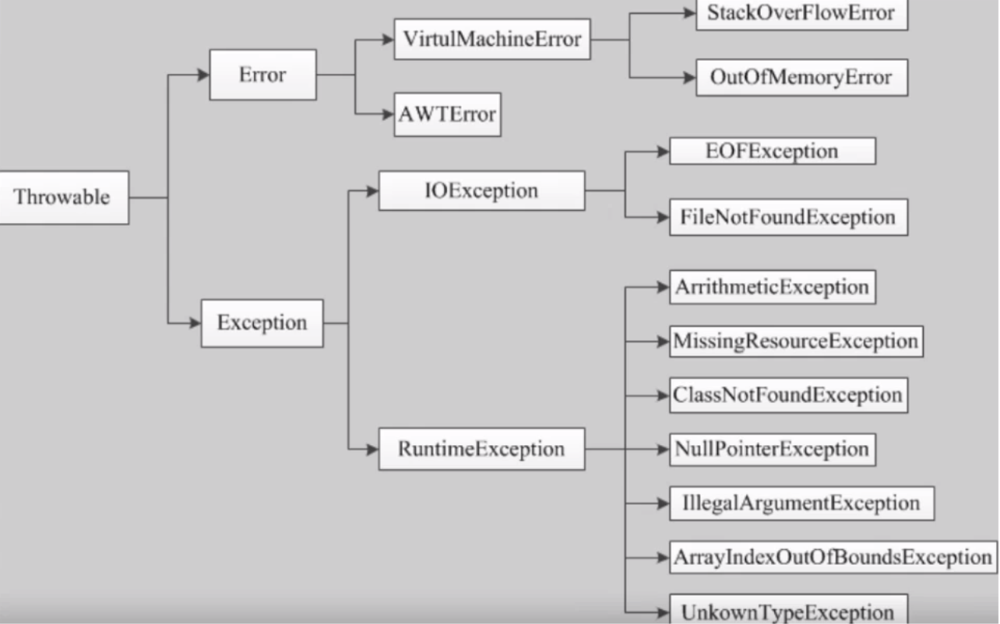
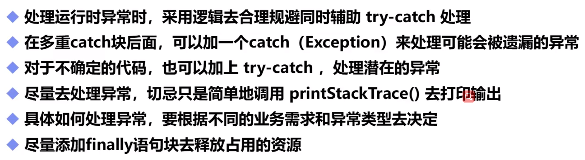

简单分类 异常体系结构 Error Exception 异常处理机制 自定义异常 实际经验
异常
异常指程序运行中出现的不期而至的各种情况，如：文件找不到、网络连接失败、非法参数等。
异常发生在程序运行期间，它影响了正常的程序执行流程。
简单分类
检查性异常（测试岗的人的主要工作）
是用户错误或问题引起的异常，这是程序员无法预见的。例如要打开一个不存在的文件时，一个异常就发生了，这些异常在编译时不能被简单的忽略
运行时异常
可能被程序员避免的异常。与检查性异常相反，运行时异常可以在编译时被忽略
错误（ERROR）
错误不是异常，而是脱离程序员控制的问题。错误在代码中通常被忽略。例如当栈溢出时，一个错误就发生了，它们在编译也检查不到
异常体系结构
Java把异常当做对象来处理，并定义一个基类java.lang.Throwable作为所有异常的超类。在Java API中已经定义了许多的异常类，这些异常类分为两大类，错误Error（无法预见）和异常Exception（可以预见）

AWTEError有关于GUI
Error
Error对象由Java虚拟机生成并抛出，大多数错误与代码编写者所执行的操作无关
这些异常发生时，Java虚拟机（JVM）一般会选择终止线程。
Exception
在Exception分支中有一个重要的子类RunTimeException（运行时异常）
- ArrayIndexOutOfBoundsException（数组下标越界）
- NullPointerException（空指针异常）
- ArithmeticException（算数异常）
- MissingResourceException（丢失资源）
- ClassNotFoundException（找不到类）等异常，这些异常是不检查异常，程序中可以选择捕获处理也可以不处理
这些异常一般有程序逻辑错误引起，应该尽可能避免
和Error的区别：Error通常是灾难性的致命错误，是程序无法控制和处理的，当出现这些异常时，JVM一般会选择终止线程。Exception通常是可以被程序处理的，并且在程序中应尽可能的去处理这些异常
异常处理机制
- 抛出异常
- 捕获异常
- 异常处理的五个关键字：try catch finally throw throws
try-catch-finally
快捷键：选中代码Ctrl+Alt+t
1 | public class Test{ |
throw throws
1 | public class Test{ |
自定义异常
使用Java内置的异常类可以描述在编程时出现的大部分异常情况。除此之外，用户还可以自定义异常。用户自定义异常类，只需继承Exception类即可。
步骤：
- 创建自定义异常类
- 在方法中通过throw抛出异常对象
- 如果在当前抛出异常的方法中处理异常，可以用try-catch语句并处理；否则在方法的声明处通过throws指明要抛出给方法调用者的异常，继续进行下一步操作
- 在出现异常方法的调用者中捕获并处理异常
1 | public class MyException extends Exception(){ |
实际经验

常用类（object类—hashcode() toString() clone() getClass() notify() wait() equals() Math类 Random类 File类(增删改查文件) 包装类（自动拆箱和装箱） Data类(Date SimpleDateFormat Calendar) String类(操作量较少) StringBuffer(可变长 append() 多线程数据量大 效率低安全) Stringbuilder(可变长 单线程数据量较大 效率高不安全)） io 集合